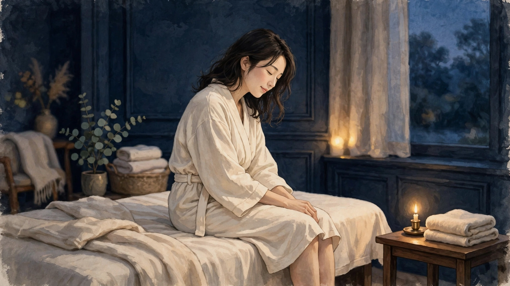

芦屋で気になる巻き肩｜要因の整理とセルフケア、受診の目安

「気づくと肩が前に出て、内側に巻き込むように丸まっている」「鏡に映る上半身が、なんだか縮こまって見える」——そんな「巻き肩」が気になる方はいませんか。この記事は、背中全体の丸みを扱う猫背とは切り分けて、肩の位置そのものに絞って整理したものです。猫背と巻き肩は重なって表れることも多いのですが、ここでは肩まわりの感覚に注目します。巻き肩の一般的な解説と、デスクワークやスマートフォンの使い方、胸まわりの筋肉の硬さなど考えられる要因の整理、日常で取り入れやすいセルフケア、受診の目安をまとめました。
巻き肩とは — 肩の位置に絞って整理する
巻き肩は医学的な病名ではなく、肩が本来の位置より前方・内側へ入り、胸が閉じたように見える姿勢の状態を指す、一般的な言葉です。横から見たときに、耳の真下あたりにあるはずの肩先が、それより前に出ているように見える状態を表すことが多く、肩甲骨が背骨から離れて外側へ開く動きと、腕の骨（上腕骨）が内側へねじれる動きが組み合わさって表れやすいとされています。
背中全体が丸くなる猫背とは、注目する場所が違います。猫背は背中（胸の後ろ側の背骨まわり）の丸みが中心で、巻き肩は肩の位置そのものに注目した見方です。実際には両方が重なっていることも多く、姿勢全体の見直しについては、コラム「芦屋で気になる姿勢・猫背｜座り方と立ち方の見直し」もあわせてご覧ください。この記事では、肩まわりに絞って整理していきます。
「巻き肩」と表現される状態には個人差がありますが、たとえば次のように感じることがあります。
- 肩が内側に入り、胸が閉じたように見える
- 鏡を横から見ると、耳より肩が前に出ているように感じる
- 腕を自然に下ろすと、手のひらではなく手の甲が前を向きやすい
- 深呼吸をしたときに、胸が開きにくい気がする
- 肩こりや首の重さ、背中の張りと一緒に気になることが多い
- 写真に写る上半身が、縮こまって見える
巻き肩そのものは姿勢の癖のひとつとして捉えられることが多い一方、肩や腕の痛みやしびれをともなう場合は、姿勢の癖だけでは片づけられない背景が関係していることもあります。まずは、どんな場面で肩の位置が気になるのか、肩こりなどほかの感覚と重なっていないかを振り返ってみることが、自分の状態を知る手がかりになります。肩の重さそのものが中心に気になる方については、コラム「芦屋でデスクワーク後に気になる肩こり｜要因の整理とセルフケア、受診の目安」もご覧ください。
考えられる要因

巻き肩が気になりやすくなる背景は、ひとつとは限らず、いくつかの要因が重なっている場合もあります。ここでは一般的に挙げられるものを整理しますが、特定の原因を断定するものではありません。
- デスクワークや画面作業の姿勢：パソコンのキーボードやマウスへ両腕を前に伸ばす姿勢、画面をのぞき込む前かがみの姿勢が長く続くことで、肩が前・内側に入った位置のまま過ごす時間が長くなること
- スマートフォンの使い方：両手でスマートフォンを持ち、うつむいて画面を見る姿勢が続くと、腕が内側に寄り、肩も一緒に巻き込みやすくなること
- 胸まわり（体の前面）の筋肉の硬さ：大胸筋や小胸筋など胸まわりの筋肉が縮こまった状態が続くと、肩を前へ引く力が働き続けやすいとされること
- 肩甲骨まわりを動かす機会の少なさ：肩甲骨を背中の中央へ寄せる動きや、腕を大きく回す動きが日常で少ないと、肩を後ろへ保つ側の筋肉が働く場面も少なくなりやすいこと
- 荷物の持ち方や家事の姿勢：買い物袋や子どもの抱っこ、洗濯物や掃除などで、腕を体の前で使う動作が続くこと。芦屋の坂道で重い荷物を前抱えに運ぶ場面が重なることも
- 眠る姿勢：横向きで上の肩が前に落ち込む姿勢や、うつ伏せに近い姿勢で眠る時間が長いと、肩の位置がその形で固定されやすく感じられること
- 運動量や活動量の偏り：体を動かす機会そのものが少なく、同じ姿勢のまま過ごす時間が長い生活が続くこと
なかには、肩関節や首（頸椎）の状態、加齢にともなう筋力の変化など、姿勢の癖以外の背景が関係している場合もあります。「デスクワークのせいだろう」と決めつけず、片側だけが極端に気になる、様子が変わってきた、といった場合は医療機関で確認することが大切です（受診の目安は後述します）。肩甲骨まわりの重さが中心に気になる方については、コラム「芦屋で気になる背中の張り｜要因の整理とセルフケア、受診の目安」もご覧ください。
セルフケア — 日常で取り入れられる工夫
巻き肩に対する日常のセルフケアでは、肩を前へ引く側（胸まわり）をゆるめる工夫と、肩甲骨まわりを動かす機会を増やす工夫の両方を意識することが基本になります。強い力で肩を押し戻したり、痛みをともなう無理なストレッチをしたりすることは避け、無理のない範囲で取り入れやすい工夫を挙げます。
- 姿勢をこまめにリセットする：座り仕事やスマートフォンの使用が続いたら、一度立ち上がり、両肩を耳へ近づけるように上げてストンと落とす動きや、肩を前・後ろへ大きく回す動きを数回行います。位置を「直そう」と力むより、こまめに動かすことを意識します。
- 胸を開くストレッチ：両手を背中の後ろで組み、肩甲骨を軽く寄せながら胸を自然に開きます。腕を後ろで組みにくい場合は、ドア枠や壁に前腕をつけ、体を少し前に進める形でもかまいません。心地よい伸びを感じる範囲で、呼吸を止めずに数回繰り返します。
- 肩甲骨を寄せる動き：背筋を伸ばして座り、両肘を曲げて後ろへ引く、肩甲骨同士を近づけるような動きをゆっくり行います。腰を反らしすぎないよう注意し、痛みのない範囲にとどめます。
- 画面と椅子の位置を見直す：画面の高さや距離、椅子の座面の高さを調整し、肩が前に出にくい配置を探します。キーボードやマウスは体の近くに置き、腕を遠くへ伸ばし続けない工夫も挙げられます。
- 入浴で肩まわりを温める：シャワーで済ませず、ぬるめのお湯に肩までゆっくり浸かる時間をつくります。湯船の中で肩をゆっくり回す動きも取り入れやすい工夫です。熱すぎるお湯や長湯は避け、様子を見ながら行います。
- 腕を使う場面を左右で分ける：荷物を持つ手や、抱える向きを左右で入れ替える、重い荷物はリュックやカートを使うなど、片側・前側ばかりに負担が寄らない工夫をします。
- 眠る姿勢を少し見直す：横向きで眠る方は、抱き枕やクッションを胸の前に置き、上の腕を預けることで、肩が前に落ち込みにくい形を試してみます。合わないと感じたら無理に続けないことも大切です。
大切なのは、一度に全部を変えようとしないことです。仕事の合間の肩回し、入浴後の胸を開くストレッチといった続けやすい工夫ひとつから試し、自分の生活に合うものを少しずつ残してみてください。痛みやしびれがあるときに無理に動かしたり強く押したりすることは避け、まずは休むことを優先しましょう。
受診の目安
次のような場合は、整形外科など医療機関への相談を検討してみてください。
- 肩や腕に痛みがあり、腕を上げる・後ろへ回す動きがしにくい
- 腕や手にしびれが出る、力が入りにくい感覚をともなう
- 夜、肩の痛みで目が覚める、眠りにくい日が続いている
- 片側の肩だけが極端に前に出ている、左右の位置の差が大きい
- ぶつけたり転んだりした後から、肩の位置や動かしにくさが気になる
- 十分に休んでも数週間以上続き、少しずつ強くなっている
- 肩だけでなく、首の痛みや頭痛、めまいをともなう
こうした症状の背景には、姿勢の癖以外の要因が関係していることもあります。セルフケアは日常の工夫として位置づけ、気になる症状が続くときは我慢しすぎず、医療機関で確認しておくと安心です。
ステラベガのご案内 — 肩まわりをゆだねる休息の時間に
ステラベガは、芦屋市内にある女性専用のプライベートサロンです。施術歴30年のセラピストが、オイルマッサージと美容整体を組み合わせた90分コース（10,000円・税込）をご提供しています。営業は月曜〜土曜の17:00〜22:00（日曜休み）、完全予約制で、詳しい住所はご予約確定後にご案内します。完全個室ですので、人目を気にせずゆっくりとお過ごしいただけます。シャワー設備のご利用については、ご利用施設により異なります。ご希望の場合はご予約時にお問い合わせください。
当サロンのお悩み別ガイドでは「姿勢・猫背」を取り上げており、美容整体ではまず姿勢のクセを確認するところから始め、胸まわりを開き、背中と骨盤のバランスを整える構成をご案内しています。施術ではカウンセリングでその日の体調や気になる部位をうかがい、巻き肩で縮こまりやすい胸まわりや、肩甲骨まわりも含め、全身のバランスを見ながら組み立てます。精油は体調とお好みに合わせてブレンドし、圧の強さは施術中も都度調整しますので、気になることがあれば遠慮なくお声がけください。施術後の過ごし方や、ご自宅で続けられるセルフケアについても、施術後にご説明します。なお、近日開院予定のため、ご予約の受付はまだ開始していません。受付開始はこのページでご案内します。料金や営業時間の詳細は料金・営業時間のページでご確認ください。
なお、当サロンの施術はリラクゼーションと美容を目的としたもので、医療行為ではありません。巻き肩に対する効果を保証するものでもありません。気になる症状がある場合は、まず医療機関へご相談ください。